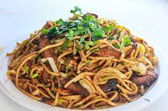

Chowmein

Description
Chow mein is a delicious Chinese stir-fry noodle dish that combines vegetables, protein, and flavorful sauce. Here’s a simple recipe for you:
Ingredients
- 200 grams of chicken thigh fillets
- 4 cups of finely shredded green cabbage
- 1 ½ tablespoons of peanut oil
- Bean Sprouts: 1 cup
- Soy Sauce: 2 tablespoons
Procedure
- Cook the Noodles: Boil the chow mein noodles in salted water until tender. Drain and set aside.
- Sauté the Chicken: Heat a pan or wok with a little oil. Add the sliced chicken and cook until no longer pink. Remove from the pan.
- Stir-Fry the Veggies: In the same pan, add more oil if needed. Stir-fry the shredded cabbage until slightly wilted. Add the bean sprouts and cook briefly.
- Combine Everything: Return the cooked chicken to the pan. Add the cooked noodles and soy sauce. Toss everything together until well combined.
- Serve Hot: Serve your delicious 5-ingredient chow mein hot and enjoy!
HOME